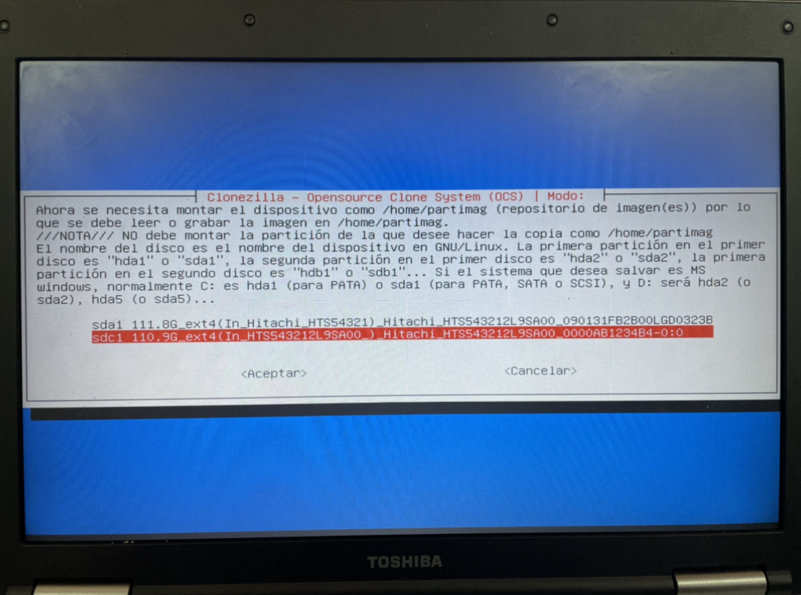
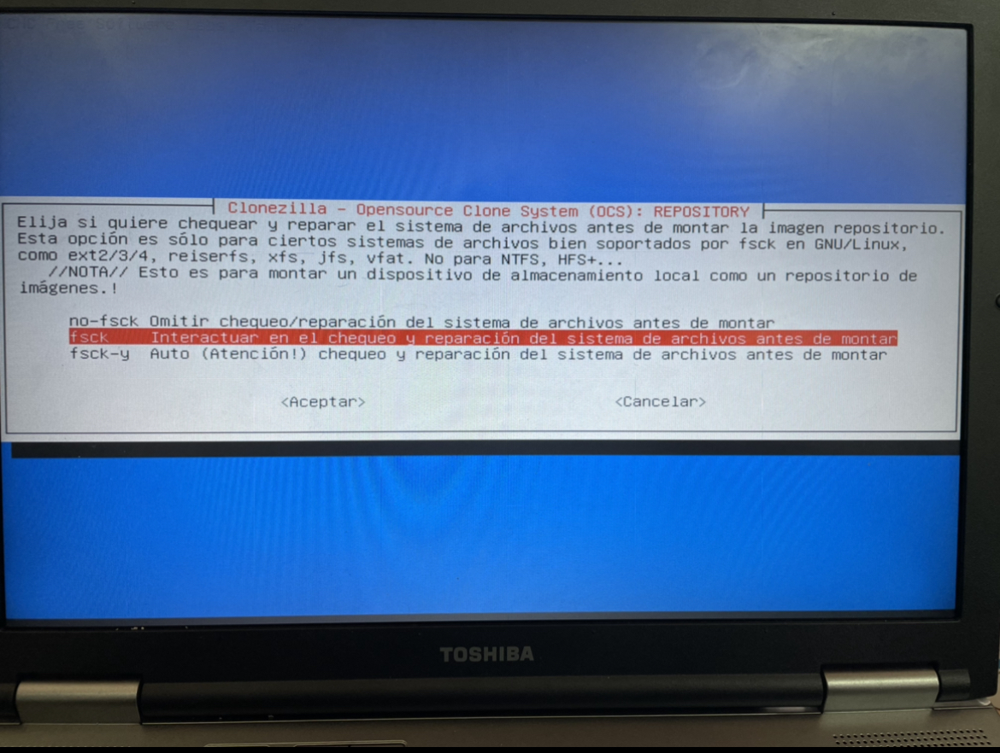

Paso1
Cuando entramos en Clonezilla elegimos la configuración por defecto.

Paso2
Ahora tenemos que elegir el idioma.
Paso3
Elegimos no tocar la distribución del teclado.
Paso4
Procedemos a empezar con el Clonezilla y le damos a start Clonezilla.
Paso5
Elegimos disco/partición a /desde imagen.
Paso6
Elegimos dispositivo local para poder guardarlo en un disco duro o en dispositivos USB.
Paso7
Ahora elegimos donde queremos que se guarde la imagen yo he elegido un disco duro externo que he metido.
Paso8
Elegimos si queremos chequear y reparar el sistema de archivos.
Paso9
En que directorio quieres guardarlo. Yo lo he guardado en el superior.
Paso10
Seleccionamos modo principiante para aceptar las opciones por defecto.
Paso11
Elegimos guardar disco local como imagen.
Paso12
Introducimos el nombre que le queremos poner.
Paso13
Ahora elegimos el disco local de origen.
Paso14
Elegimos la opción de compresión.
Paso15
Esta opción es para si quieres comprobar si la imagen es restaurable, después de que se haya grabado la imagen.
Paso16
Podemos elegir cifrar la imagen.
Paso17
Elegimos cuando termine la acción que queremos hacer.
Paso18
Este es el último paso cuando este paso termine ya hemos terminado de grabar la imagen.
Paso19
Cuando haya terminado ya tenemos nuestra imagen clonada para utilizarla entramos en Clonezilla otra vez.
Paso20
Tenemos que realizar los mismo pasos hasta llegar a este paso y elegimos donde tenemos la imagen almacenada.
Paso21
Pero ahora en vez de savedisk elegimos la opción restoredisk que es la tercera opción.
Paso22
Nos saldrá la imagen que hemos creado anteriormente.

Paso23
Y ahora tenemos que elegir en que disco duro queremos instalarlo.

Paso24
Empezará a clonar la imagen en el disco duro cuando termine al reiniciar el ordenador ya estará montada.
Paso25
Ya está terminado la clonación nos saldrá esto.